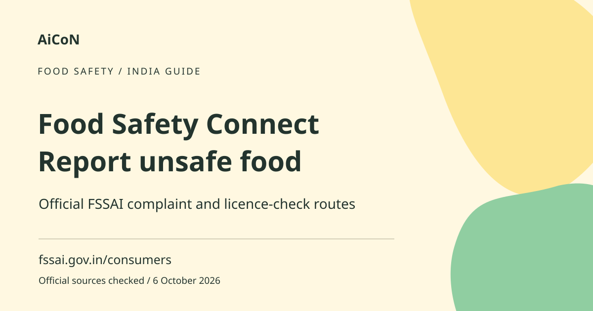

FSSAI Food Safety Connect: report unsafe food
FSSAI Food Safety Connect gives consumers an official route to report a food-safety issue and track a complaint. The citizen-services page also links to licence verification and food recalls. A complaint is not a substitute for urgent medical help.

What is Food Safety Connect?
FSSAI is the Food Safety and Standards Authority of India. Its consumer-services page brings food-safety complaints, licence verification, recall information and awareness resources together. FoSCoS is FSSAI's food-safety compliance system. A consumer grievance is a complaint about a problem, not an automatic finding that a food business broke the law.
When a Kerala consumer may use it
If you are worried about unsafe or adulterated food, preserve the facts and use the official food-safety route. Describe what you actually saw rather than guessing a laboratory result. A restaurant-service dispute or late delivery is not always the same as a food-safety concern. Read the portal categories and choose the one that fits. State authorities may be involved in handling the matter.
How to use it, step by step
- Open fssai.gov.in/consumers and select Lodge Complaint or Food Safety Connect. This links to the official consumer-grievance portal.
- Read the current categories and form instructions. Complete any verification requested by the official site. Do not give an OTP to a third-party caller.
- Record the business name, location, purchase date and food details. Keep the bill, packaging, label, batch details and licence number if available.
- Write a clear factual description. Include photographs or other evidence only as the form permits. Avoid accusations that go beyond what the evidence shows.
- Review the contact and complaint details, then submit through the official route. Keep the acknowledgement or reference number.
- Use Track Complaint from the consumer-services page to check progress. Keep copies of any response or request for more information.
- If you want to check a licence, choose Verify Licence and enter the details shown on the business or product record. Compare the returned information with the business you dealt with.
- For a recall, read the official Food Recall information and follow the product-specific instructions. Do not rely on a social-media screenshot without checking the source.
If someone is unwell
Seek appropriate medical help promptly. Do not wait for an online complaint to be processed before getting care for serious symptoms. Keep relevant purchase and medical records for the complaint. Do not taste suspected food again to prove a point or use a home test as a substitute for an official laboratory finding.
Cost, eligibility and limits
The public consumer route does not advertise a paid subscription or an agent fee. It serves Indian consumers, including Kerala. Filing does not guarantee a refund, enforcement action or a fixed response date. Licence verification confirms the returned record; it does not certify that every meal or package from that business is safe. Recall information is product-specific.
Helpline hours differ across official pages
The FSSAI consumer and Food Safety Connect pages list 1800112100 from 7 AM to 11 PM. The FoSCoS home page lists the same helpdesk number with 9 AM to 6 PM hours. We preserve that mismatch rather than promise one support window for every enquiry. Begin with the consumer page and use the complaint portal; if calling, confirm availability. Never pay an unofficial helper to obtain action.
Frequently asked questions
Will a complaint automatically get me a refund?
No. Handling and remedies depend on the issue and applicable process.
Does a valid licence prove the food is safe?
No. It identifies a licence record, not the safety of every item.
Can I report from Kerala?
The national consumer route can be used for relevant Indian food-safety complaints. Choose the correct business location.
Should I wait for FSSAI if I feel ill?
No. Obtain medical help when needed and preserve evidence separately.
Official sources
- FSSAI citizen services
- Official Food Safety Connect page
- Official consumer grievance portal
- FoSCoS official home and helpdesk
Checked 6 October 2026. Expanded from an AiCoN short post delivered 6 October 2026. Portal screens and rules can change.